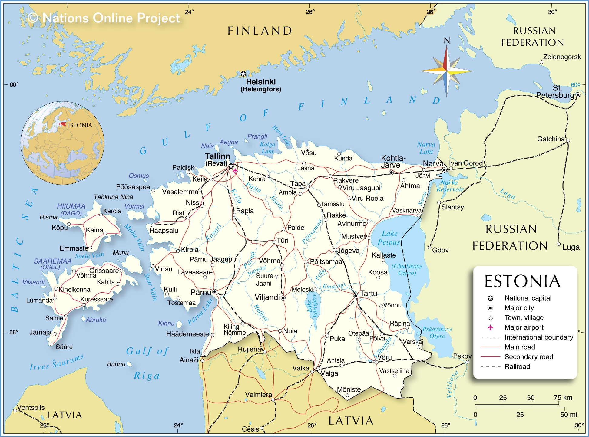
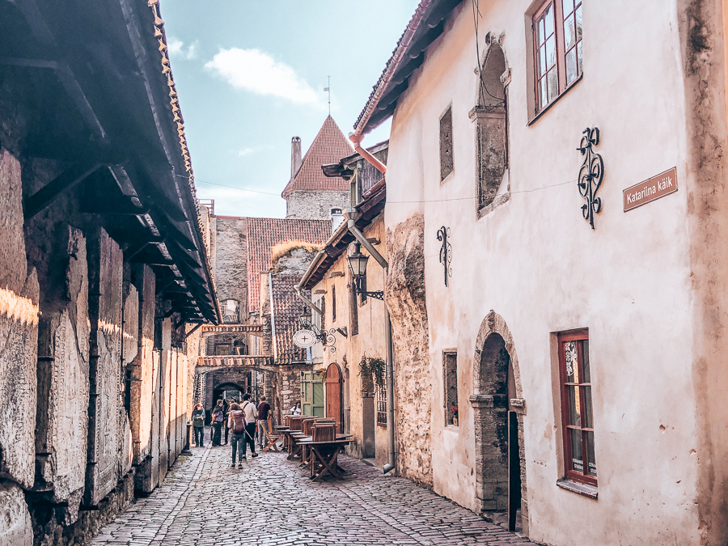
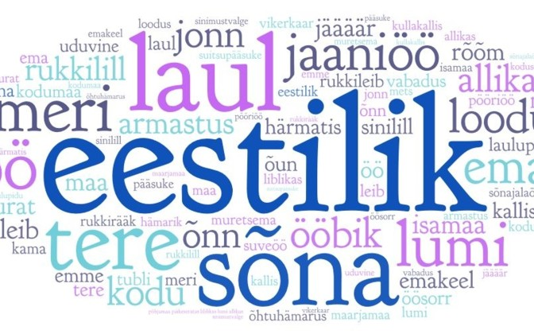
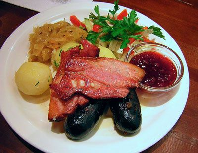

Acerca de Estonia
Con apenas un millón y medio de habitantes, Estonia es la República Báltica más pequeña, pero también la más próspera y desarrollada. Es el país ex-soviético con el mayor nivel de vida, superando incluso a Rusia en este aspecto. Se estima que en 20 años tendrá el mismo nivel de vida que sus parientes finlandeses y los suecos.
Las ciudades más grandes son Tallinn (390.000 habitantes), Tartu (93.000) y Pärnu (39.400).
Hace frontera con Rusia al este, con Letonia al sur y con el mar Báltico al norte y al oeste. La capital finlandesa, Helsinki, está sólo a 80 km al norte de Tallinn.
A diferencia de Lituania y Letonia, Estonia no es de raza báltica, sino urálica. Es un pueblo hermano de Finlandia, y eso se nota en su idioma y cultura. Así mismo, tiene mucha influencia histórica sueca, danesa y alemana.
Al contrario que la inmensa mayoría de pueblos de Europa, los estonios no son de origen europeo. Sus antepasados son tribus finoúgricas procedentes de una región al este de los montes Urales (la frontera entre Europa y Asia). Están emparentados con los finlandeses, con varios pueblos de Rusia como los komi o los mordovianos y lejanamente con los húngaros.
Estonia es el país más digitalizado de Europa, así como la nación del continente donde más fácil es crear una empresa.
Historia
Los protoestonios llegaron a la zona de la actual Estonia hace 5000 años. Eran una sociedad agrícola y económicamente autosuficiente, dividida en clanes liderados por hombres de gran riqueza y poder.
Al comienzo de la Edad Media, Estonia era una nación principalmente de pequeños terratenientes, con un gobierno descentralizado y con una población de 150.000 personas, siendo de los últimos rincones de Europa en ser cristianizado.
A comienzos del siglo X, los vikingos empezaron a asentarse en las islas estonias de Saaremaa y Hiiumaa. Como resultado de esta estadía escandinava, aún quedan topónimos de origen sueco en esta zona, como Förby o Kärdla.
A lo largo del siglo XI los alemanes, suecos y daneses comenzaron las Cruzadas Bálticas para convertir a los paganos del Báltico al cristianismo. Los letones y prusianos fueron conquistados exitosamente, no así fue con los lituanos, que no fueron cristianizados hasta dos siglos después.
Como los letones eran enemigos de los estonios, los alemanes se aprovecharon de eso para cristianizar a los últimos con ayuda letona. De esta manera el pueblo estonio terminó finalmente bautizado y cristianizado.
En 1219 los daneses invadieron el norte de Estonia, y fundaron la capital, Tallinn, cuyo nombre viene de Taani Linn, ciudad danesa en estonio. Cuenta la leyenda que tras derrotar a los estonios, Dios le entregó al ejército danés su bandera, la Dannebrog, que posteriormente sirvió de inspiración al resto de países nórdicos para diseñar sus banderas.
Los estonios fueron convertidos en siervos, y en Tallinn (llamada Reval en alemán) vivían los alemanes y los daneses.
El territorio quedó dividido entre la Orden de Livonia, el obispado de Dorpat y el de Ösel-Wiek. En 1346 Dinamarca se retiró de Estonia, comenzando así la hegemonía alemana, que duró casi 6 siglos, hasta 1918.

Reval se unió a la Liga Hanséatica, convirtiéndose en una de las ciudades más importantes de dicha liga comercial. En 1524 las ideas de Lutero llegaron a Estonia, y fueron muy bien recibidas, por lo que los estonios se convirtieron al luteranismo.
En 1558 las fuerzas del zar ruso Iván el Terrible intentaron conquistar Estonia y sitiar Reval, situación que aprovechó el Imperio Sueco para involucrarse en la guerra. Los suecos derrotaron a los rusos, y se apoderaron del norte de Estonia (Reval includia)en 1561. Dinamarca se anexionó las islas de Dagö y Ösel (Hiiuma y Saaremaa) y Polonia el sur de Estonia.
A pesar de pertenecer a estos tres países, la lengua de enseñanza sigue siendo el alemán, ya que eran la élite dominante.
Durante el periodo sueco, el rey Gustavo Adolfo fundó la primera universidad de Estonia en Tartu, en 1632.
Tras la Gran Guerra del Norte, que enfrentó principalmente a Suecia con Rusia, los rusos se apoderaron de Estonia, y fue integrada en el Imperio Ruso, por lo que Pedro el Grande pudo ver cumplido su sueño de obtener otro acceso al Báltico además de la recién fundada San Petersburgo. Estonia fue rusa durante casi dos siglos, hasta 1918.
Al igual que en Letonia, los rusos no se entrometieron en la vida de los estonios y alemanes: siguieron practicando su religión luterana, hablaban alemán y mantuvieron los privilegios y derechos hanseáticos.
En la segunda mitad del siglo XIX surgió el nacionalismo estonio, con una de sus máximas expresiones en la epopeya nacional, llamada Kalevipoeg, muy similar al Kalevala finlandés. Los estonios étnicos empezaron a emigrar a las ciudades, por lo que el alemán y el ruso dejaron de ser los dos únicos idiomas de Estonia.
El déspota zar Nicolás II reaccionó prohibiendo cualquier otro idioma que no fuera el ruso, e impuso por la fuerza la fe ortodoxa en las provincias bálticas, Polonia y Finlandia, lo que incrementó aún más el deseo de independencia de estos países.
En 1918 fue proclamada la independencia de Estonia, y aunque los bolcheviques invadieron el país fueron rápidamente expulsados por los alemanes ese mismo año. El Imperio Alemán pretendía unir a Letonia y Estonia para crear un nuevo país, el Ducado Báltico Unido, que sería un protectorado alemán. Dichos planes nunca se realizaron debido a la derrota de Alemania tras la guerra.
En 1919 Estonia fue atacada nuevamente por el Ejército Rojo, pero con ayuda británica y finlandesa los estonios fueron capaces de crear un ejército nacional capaz de hacerles frente. Tras la guerra, a principios de 1920, se firmó el Tratado de Tartu, en el cual la Rusia soviética renuncia al control de Estonia para siempre, lo cual, desgraciadamente, no fue así.
Durante los años 20 y 30 Estonia toma como modelo de referencia a Finlandia, su país hermano, con el que tiene profundos lazos culturales, lingüísticos y étnicos. Los finlandeses acogen bien a los estonios y se aprecian mutuamente.
En 1940, como parte del tratado secreto entre Hitler y Stalin (el pacto Molotov-Ribbentrop), Estonia es anexionada a la URSS, rompiendo así el Tratado de Tartu firmado 20 años atrás. Empiezan las deportaciones de estonios a Siberia, los que pudieron huir se exiliaron principalmente en la neutral Suecia.
En 1941 los nazis invadieron la URSS, lo que incluía a Estonia también. Al principio, los alemanes fueron recibidos en Estonia como héroes que salvarían al pueblo estonio de las fauces soviéticas, pero en realidad exterminaron a prácticamente todos los judíos que vivían en Estonia, así como a homosexuales y opositores al nazismo.
En 1944 la URSS vuelve a ocupar Estonia, y el país permaneció bajo dominio soviético hasta 1991. Tras la guerra, mucho personal militar, industrial y médico procedente de Rusia, Ucrania y Bielorrusia se estableció en Estonia, lo que sumado a la deportación y exilio de estonios étnicos cambió la composición étnica del país. Como la segunda lengua oficial era el ruso, la mayoría de los nuevos residentes de Estonia no aprendieron estonio.
El país se industrializó mucho durante la era comunista. Estonia fue el primer lugar de la URSS donde se escuchó a los Beatles y a ABBA, a principios de los años 80. Tras la Cadena Báltica y los episodios de violencia entre los estonios y el Ejército Rojo, Estonia obtuvo su ansiada independencia en 1991.
Muchos eslavos fueron repatriados a Rusia o Ucrania, y de los que se quedaron la mayoría no adoptaron la ciudadanía estonia. A pesar de ello, en la actualidad los hijos de los rusos y otros eslavos residentes en Estonia saben hablar estonio, debido a que es el idioma de la enseñanza.
En 2004 se integró en la Unión Europea, y en 2011 adoptó el euro, sustituyendo a la corona estonia. Por último cabe destacar que este país ha cosechado un éxito brutal en cuanto a tecnología se refiere, siendo el país donde nació el famoso sistema de videollamadas Skype, y siendo también la nación más digitalizada de Europa.
Idiomas
El único idioma oficial de Estonia es el estonio, una lengua finourálica cuyo pariente más cercano es el finés. Está también emparentado con lenguas regionales de Rusia como el karelio, el vepsio, el komi o el mordoviano, y muy lejanamente con el húngaro. Es hablado por el 75% de la población, y entendido por casi el 90%. La segunda lengua del país es el ruso, hablado por el 20% de la población. Otras lenguas habladas son el letón, el bielorruso, el ucraniano, el sueco y el finés. La mayor parte de la gente joven habla inglés a la perfección, y el finés está muy extendido debido a las buenas relaciones con Finlandia y al gran número de turistas finlandeses que recibe Estonia. La gente mayor tiene conocimientos de ruso, alemán y sueco. A continuación unas palabras y frases básicas en estonio:

Hola-Tere /tére/
Adiós-Hüvasti /júivasti/
Gracias-Tänan /ténan/
Por favor-Palun /pálun/
¿Qué tal?-Kuidas sul läheb? /kúidas sul léjep/
Bien, mal-Kenasti, Halb /kénasti, jálp/
¿Hablas inglés/español/estonio?-Kas sa räägid inglise/hispaania/eesti keelt? /kas sa réeguit ínglise-jispaania-eesti keelt/
¿Dónde está...?-Kus on...? /kus on/
Estación de tren-Rongijaam /rónguiyaam/
Aeropuerto-Lennujaam /lénuyaam/
Autobús-Buss /buss/
Troleibús-Trollibuss /trólibuss/
Tranvía-Tramm /tramm/
Coche-Auto /áuto/
Cultura
La cultura de Estonia es el resultado de la combinación de sus elementos nativos ugrofineses con aspectos escandinavos, alemanes y eslavos. A pesar de ser uno de los países del mundo con el porcentaje de ateísmo más alto (70%), la iglesia nacional de Estonia es de la rama luterana del cristianismo, como resultado de la colonización alemana y la herencia sueca. No obstante la iglesia ortodoxa tiene una gran presencia en este país, ya que el 25% de la población es de origen ruso y ucraniano.

El primer libro conocido en estonio fue una traducción del Nuevo Testamento, llevada a cabo por Jakob Johann Köhler en el siglo XVIII. A pesar de ello, el estonio no se convirtió en lengua literaria hasta la segunda mitad del siglo XIX, en el marco del despertar nacional estonio. Friedrich Robert Faehlmann recopiló varios cuentos tradicionales de Estonia, y Reinhold Kreutzwald los publicó en su obra, el Kalevipoeg, la epopeya nacional. La primera mujer escritoria de Estonia fue Lydia Koidula, quien escribió su obra únicamente en estonio.
A pesar de su corta tradición musical, Estonia a día de hoy goza de cierto reconocimiento en este área artística.
Al igual que Finlandia, en Estonia el rock y el heavy metal son muy populares, con grupos como Metsatöll y compositores como Arvo Pärt.
Gastronomía
La gastronomía de Estonia tiene, al igual que el resto de su cultura, fuertes influencias rusas, escandinavas y alemanas. Al ser un país de clima frío, es muy habitual encontrar elementos como la col fermentada, la patata, la carne de cerdo, y una gran cantidad de productos lácteos, que ayudan a guardar el calor en el cuerpo.
El plato nacional de este país es la morcilla, llamada en estonio verivorst, que significa literalmente en estonio ''salchicha de sangre''. El pescado es también ampliamente consumido, sobre todo el arenque, que es frecuentemente acompañado con nata agria o patatas.
Como en Rusia y en Finlandia, el vodka es la bebida nacional, aunque la cerveza goza también de popularidad, siendo Saku la marca nacional estonia por antonomasia.
Y en cuanto a postres, son muy populares las vaesed rüütlid, muy similares a las torrijas españolas.